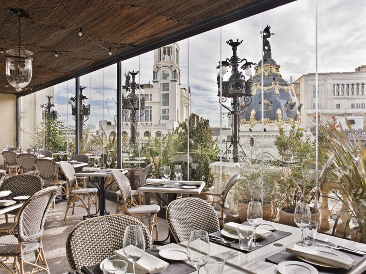

Restaurante Píxel es una de las ofertas gastronómicas más recomendadas en Madrid, ofrece a sus comensales
una cocina auténtica española, pero que no es ajena a ligeras influencias de la gastronomía internacional.
Dispone de una amplia carta en la que los productos frescos y de calidad son lo más destacado. Píxel cuenta
con opciones para todos los públicos, amantes de la carne, platos elaborados con opción vegana e incluso
una amplia carta de postres y panes artesanales sin gluten.
Además diariamente presentmos un plato creativo del chef y cocineras, el cual deleita al cliente en su sabor,
variedad y precio. En Restaurante Píxel estaremos encantados de recibirte y ayudarte a pasar una gran velada.
VOLVER ARRIBA